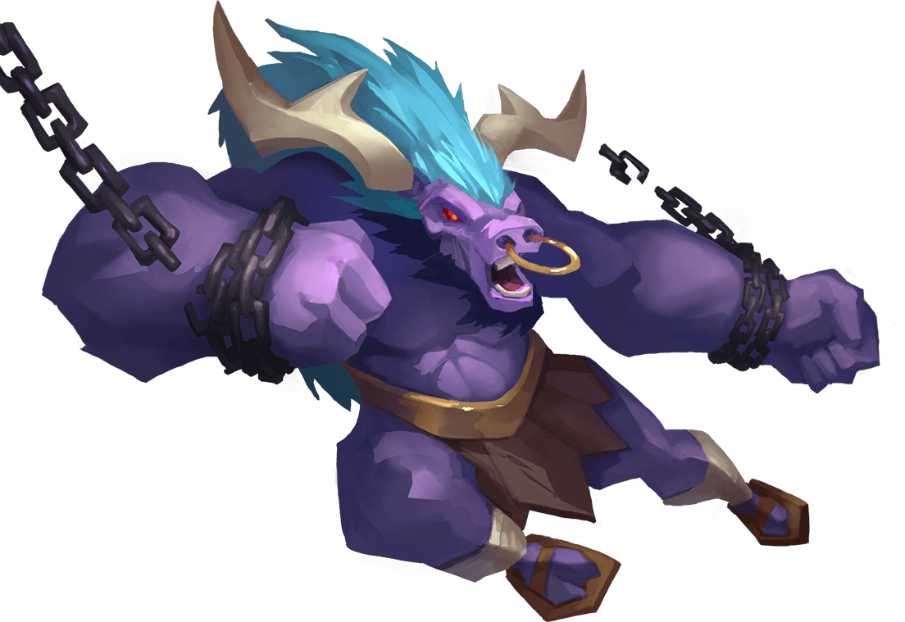

Данный проект является курсовой работой студента Papas Alexandros из группы I2102. Вдохновлением для создания проекта Tarandy служила любовь студента к модовым проектам майнкрафта, где игроки могут реализовываться в различных направлениях. Например если потенциальному игроку нравятся технологии, то специально для такого игрока существует сборка "HiTech", в которой игрок может построить свою собственную фабрику с различными технологиями. Если же игроку нравится фантастика и магия, то специально для такого игрока существует сборка "MagicRPG", в которой игрок может почувствовать себя великим магом, и создавать пентаграммы, алтари, заклинания, накладывать проклятия и всё остальное, что вы могли видеть в фильмах про мистику. А если же вам нравится и то и другое, то для таких игроков существует сборка "TechnoMagicRPG", где игроку подвластны как и технологии, так и магические приколы. В общем каждый для себя найдёт то, что ему по душе. По этой причине я решил создать нечто подобное, ведь майнкрафт - это великолепная игра, а различные модификации её отлично дополняют!